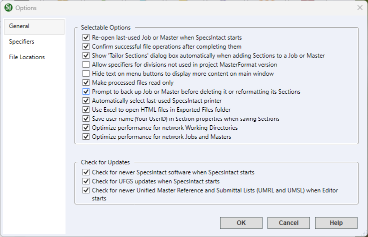

This command can also be executed using the keyboard shortcut F2.
The General tab provides a variety of application options that provide a comprehensive set of configuration settings, empowering you to adjust the software's behavior to match your specific requirements.
Deleting a Job or Master will remove it from the associated Working Directory and send it to the Windows Recycle Bin. It's important to note that deletions from Working Directories on a network server are permanent. In such instances, retrieving the deleted data necessitates contacting your IT Administrator.
 Click the tabbed commands on the image below to see how to use each function.
Click the tabbed commands on the image below to see how to use each function.

- Selectable Options - These options allow you to customize the software's behavior to manage startup actions, file operation confirmations, display preferences, data assignments, file protections, backup prompts, printer selections, and file export defaults. They also offer options for tracking user edits and optimizing performance for network files.
- Re-open last-used Job or Master when SpecsIntact starts - Automatically opens the last active project when the application starts.
- Confirm successful file operations after completing them - Provides task-specific confirmation messages upon the successful completion of file manipulation tasks, including copying, deleting, overwriting, and renaming Sections or other files. Disabling this option will suppress these confirmation notifications.
- Show 'Tailor Sections' dialog box automatically when adding Sections to a Job or Master - Controls whether the Tailor Sections window automatically appears when adding Sections to a Job or local Master. Disabling this option will suppress the automatic display of the Tailor Sections window.
- Allow specifiers for divisions not used in project MasterFormat version - Provides the option to assign specifiers to inactive MasterFormat Divisions in the selected project.
- Hide text on menu buttons to display more content on main window - Controls the visibility of text on the SpecsIntact Toolbar buttons. When enabled, the available viewing area within the main window will be maximized.
- Make processed files read only - Controls the read-only status of Processed (.prn) files to prevent accidental editing that can be overwritten during processing. Changes should exclusively occur within the Section (.sec) files.
- Prompt to back up Job or Master before deleting it or reformatting its Sections - Controls the backup prompts before deleting a Job or Master or reformatting its Sections during XML file saving, generating new Reference Articles, or modifications resulting from SpecsIntact's conversion processes. When enabled, the system will open a window offering the option to back up the file, proceed without a backup, or cancel the action.
- Automatically select last-used SpecsIntact printer - Automatically sets the last-used printer as the default printer within SpecsIntact, without changing the default Windows printer. When disabled, SpecsIntact will use the Windows default printer.
- Use Excel to open HTML files in Exported Files Folder - Automatically opens exported HTML files, like the Submittal Register, Tailoring Options, and Search Results, directly in Microsoft Excel. DoD personnel: Refer to the guidelines for opening web files in Excel.
- Save user name in Section properties when saving Sections - Records the Windows user name of the last person to edit a Section, with the information visible in the SpecsIntact Explorer and Section Properties. When enabled, it also controls the Save user name in Section Properties option found in the SI Editor's Tools menu > Options > Save tab. Significant modifications to a project will also save the user's name, such as Tailoring, Executing Revisions, Removing English or Metric Units, Renaming a Section, or using the Search and Replace feature. To display the user name in the SpecsIntact Explorer, navigate to the View menu > Columns and select the Last Edited by option. To clear all saved user names, select the Delete all Section properties option during Release Processing for a Job or Master. For more information, refer to the Process menu > Release Processing topic.
- Optimize performance for network Working Directories - Enhances performance when working with Working Directories on a network. The SpecsIntact Explorer will only load detailed information like titles and other data when you hover over or select a specific Job or Master. Prior to selection, the Job title will display as 'Select Job to See Job Title'. Disabling this feature will greatly impact performance.
- Optimize performance for network Jobs and Masters - Improves performance for networked Jobs and Masters, after the initial access. If problems occur, regenerate the pull table through the Process menu > Release Processing topic.
- Check for Updates - Independently verifies and offers to integrate updates for SpecsIntact, the UFGS Master, and the Unified Master Reference List (UMRL) and Unified Master Submittal List (UMSL). Though individual startup notifications can be disabled, maintaining all enabled options is highly advised for optimal system currency and performance.
- Check for newer SpecsIntact software when SpecsIntact starts - Automatically checks for new SpecsIntact updates every time the application starts. Staying updated provides access to the latest features.
- Check for UFGS updates when SpecsIntact starts - Automatically checks for UFGS Master updates when the application starts, ensuring the specifications are consistently current.
- Check for newer Unified Master Reference and Submittal Lists (UMRL and UMSL) when Editor starts - Automatically checks for updates to the Unified Master Reference (UMRL) and Unified Master Submittal Lists (UMSL) every time the SI Editor starts, ensuring the data used by the Reference Wizard and Submittal Wizard is always synchronized with the current UFGS Master.
Agency requirements
Installation of the most recent SpecsIntact software release is contingent upon certification by each agency. In this situation, you can discontinue the startup notification for new SpecsIntact software by unchecking the Check for newer SpecsIntact software when SpecsIntact starts option. If you elect to disable only this feature, you will continue to receive the UFGS Master, UMRL, and UMSL updates.

Standard Windows Commands
The OK button will execute and save the selections made.
The Cancel button will close the window without recording any selections or changes entered.
The Help button will open the Help Topic for this window.